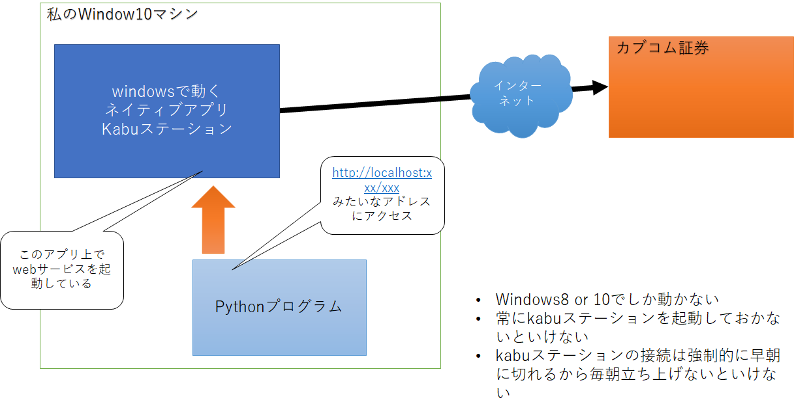

鉄は熱いうちに打て
=============================
kabuステーション APIの始め方¶
2020-12-05
この記事は fintalk Advent Calendar 2020 の5日目の投稿です。
今日はauカブコム証券が2020年8月に提供を開始したkabuステーション APIの始め方の始め方を紹介します。
kabuステーション APIは、プログラムから株取引を行えるREST APIを提供する国内初めてのサービスでした。 詳しくは、 kabu STATION API｜auカブコム証券 をご覧ください。
仕組みは以下のような感じです。 auカブコム証券が提供するkabu STATIONをプログラムで操作できます。
kabu STATIONは、Window10環境（多分8も動く）で実行できるアプリケーションです。 このkabu STATIONから情報を取得したり注文を出せたりします。 詳しくは、 kabuステーション API ｜株のことならネット証券会社【auカブコム証券】 に説明があります。
ここからが本題です。よし！kabuステーション APIを使ってみよう！と思ったはいいのですが、すぐには使えません。 今回は、kabuステーション APIを始める方法を紹介します。
auカブコム証券に口座を開く
kabuステーション APIの利用申し込みをする（詳しくは kabuステーション API ）
kabuステーションをWindowsマシンにインストールする
kabuステーションでAPIが利用できるように設定する
プログラムを書く
発注してみる
以上です。 ただ取引などをしなくても利用できるのは、 初回申込みの翌々月第1営業日まで です。 12/5に申し込むと2/2まで使えるようです。 これ以降はさらなる条件を満たす必要があります。
auカブコム証券で信用取引口座か、先物オプション取引口座を開設する（取引実績は不要。）
前月にauカブコム証券で何かしら約定する。（約定とは、金融取引において、買いまたは売りの注文が執行されて売買が成立すること）
私もサービスがはじまったときに利用できるか申し込んで、操作して、しばらく利用しないでいたら「前月に約定」という条件を満たしていなくて1か月間使えなくなってしまいました。
現在の対象商品が「（日本株の）現物株式、信用取引、先物取引、オプション取引」だけなので、あまり利用する機会もないのですが、折角なので何かの業界に絞って戦略を考えて運用したいとは思っています。 インターネット上で証券取引ができるようになって参加しやすくなりました、APIを利用して可能性が広がるといいですね。
外国株をAPI取引できるサービスを提供している会社は昔からあるらしいです。 2021年こそはそちらもやってみたいと思っています。
この記事は fintalk Advent Calendar 2020 の5日目の投稿です。